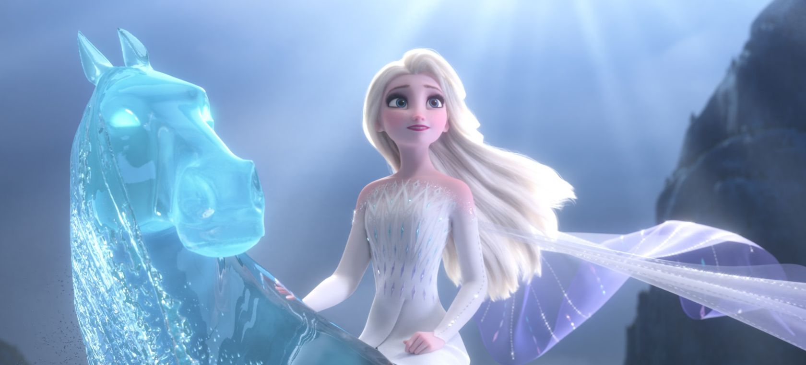

About Elsa
Elsa of Arendelle is a fictional character who appears in Walt Disney Animation Studios' 53rd animated film Frozen and its sequel and 58th animated film Frozen II. She is voiced mainly by Broadway actress and singer Idina Menzel, with Eva Bella as a young child and by Spencer Ganus as a teenager in Frozen.
Elsa on the water spirit.
- Elsa can conjure and manipulate ice and snow
- Elsa can manifest and shape various structures made of ice and snow
- Elsa can from anything from snow flurries to blizzards
- Most of her powers are unleashed via her hands and controlled by her emotions